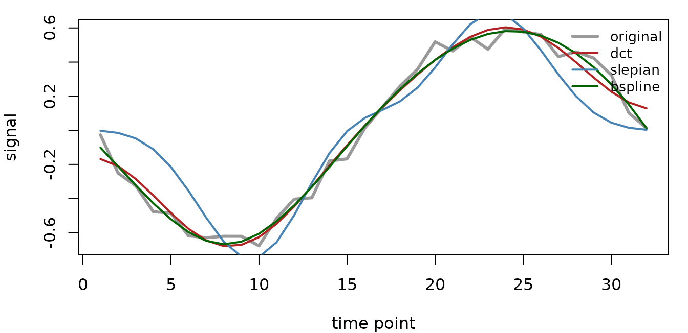

Basis choice is a modeling decision. You are choosing which structure is cheap to represent: smooth time courses, band-limited time courses, local parcel patterns, or smooth spatial atoms. This vignette uses one toy dataset to show how to compare candidates before moving to larger fMRI data.
What signal are we trying to represent?
The dataset mixes two slow temporal signals with parcel-specific spatial weights and a small amount of noise.
mask <- array(TRUE, dim = c(4, 4, 4))
mask_vol <- neuroim2::LogicalNeuroVol(mask, neuroim2::NeuroSpace(dim(mask)))
n_time <- 32L
n_vox <- sum(mask)
parcel_map <- as.integer(rep_len(1:4, n_vox))
set.seed(11)
t <- seq_len(n_time)
signal <- cbind(sin(2 * pi * t / n_time), cos(4 * pi * t / n_time))
weights <- matrix(rnorm(2 * n_vox), nrow = 2)
X <- signal %*% weights + matrix(rnorm(n_time * n_vox, sd = 0.05), nrow = n_time)Which temporal basis fits this shape?
Temporal bases share one set of time functions across all voxels. Here we keep the comparison small and report reconstruction error directly.
fits <- list(
dct = encode(X, spec_time_dct(k = 6), mask = mask_vol, materialize = "matrix"),
slepian = encode(X, spec_time_slepian(tr = 2, bandwidth = 0.08, k = 4),
mask = mask_vol, materialize = "matrix"),
bspline = encode(X, spec_time_bspline(k = 6), mask = mask_vol,
materialize = "matrix")
)
rmse <- function(x) sqrt(mean((as.matrix(x) - X)^2))
data.frame(
family = names(fits),
components = vapply(fits, function(x) ncol(basis(x)), integer(1)),
rmse = round(vapply(fits, rmse, numeric(1)), 4)
)
#> family components rmse
#> dct dct 6 0.0738
#> slepian slepian 4 0.4370
#> bspline bspline 6 0.1064
On this toy signal DCT wins numerically because the signal is two clean cosines — exactly what a cosine basis represents with few components. That is a property of the example, not a universal ranking. The recommendation below reflects the priors that hold on real fMRI data, where the signal rarely matches one basis so cleanly:
| Signal property | Prefer | Why | Avoid when |
|---|---|---|---|
| Energy in a known frequency band | Slepian/DPSS | Optimal bandlimiting, minimal spectral leakage | Signal is broadband |
| No strong spectral prior | DCT | Fast, orthogonal, parameter-free beyond k
|
You need localized, non-periodic structure |
| Smooth drifts / hemodynamic shapes | B-spline | Smooth, localized, non-periodic | Sharp or oscillatory features dominate |
Use DCT as a simple default, Slepian when frequency concentration matters, and B-splines when smooth local variation is the main prior.
What changes for spatial bases?
Spatial bases share one set of voxel patterns across time. Parcel PCA is data-driven and local to a reduction; HRBF produces smooth spatial atoms from the mask geometry.
red <- make_cluster_reduction(mask_vol, parcel_map)
spatial_fits <- list(
parcel_pca = encode(X, spec_space_pca(k = 2), mask = mask_vol,
reduction = red),
hrbf = encode(X, spec_space_hrbf(params = list(
sigma0 = 2, levels = 0, radius_factor = 2.5, seed = 11L
)), mask = mask_vol)
)
data.frame(
family = names(spatial_fits),
atoms = vapply(spatial_fits, function(x) ncol(loadings(x)), integer(1)),
rmse = round(vapply(spatial_fits, rmse, numeric(1)), 4)
)
#> family atoms rmse
#> parcel_pca parcel_pca 8 0.0444
#> hrbf hrbf 64 0.0000| Spatial structure | Prefer | Why |
|---|---|---|
| Atlas / parcellation is the analysis object | Parcel PCA | Data-driven, per-parcel, block-sparse loadings |
| Shared dictionary reused across subjects | Parcel template | Same atoms for every subject; no per-subject fit |
| Smooth spatial atoms from geometry alone | HRBF | Geometry-driven, no per-parcel model needed |
Use parcel PCA when the atlas or reduction is central to the analysis. Use HRBF when you want a geometry-driven, smooth spatial dictionary without fitting a separate PCA model in each parcel.
How should you choose in practice?
Start from the structure you trust most. If the signal is mostly
temporal, try a temporal basis first. If a shared atlas or spatial
dictionary is the analysis object, start with a spatial basis. If you
need both, use spec_st() and check partial reconstruction
with predict().
See vignette("encode-factory") for the full encoding API
and vignette("compression-diagnostics") for storage/error
diagnostics.